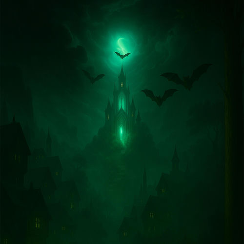

Europium
2025
AMBIENT / TRAP-STYLE EXPERIMENTAL
TRICKERT · DARK TRAP / PHONK · EXPERIMENTAL
Este lado del proyecto nace desde una mezcla de phonk oscuro, trap industrial y atmósferas nocturnas con un enfoque más sintético, extraño y emocional. Es un espacio para mostrar los tracks que se sienten más próximos a ese universo experimental y de energía urbana.
Lanzamientos más directos, agresivos y oscuros del proyecto, con una identidad cercana al dark trap / phonk experimental.
Lanzamientos más relajados, nocturnos e instrumentales, con un enfoque más lo-fi, ambiental e hip-hop instrumental.